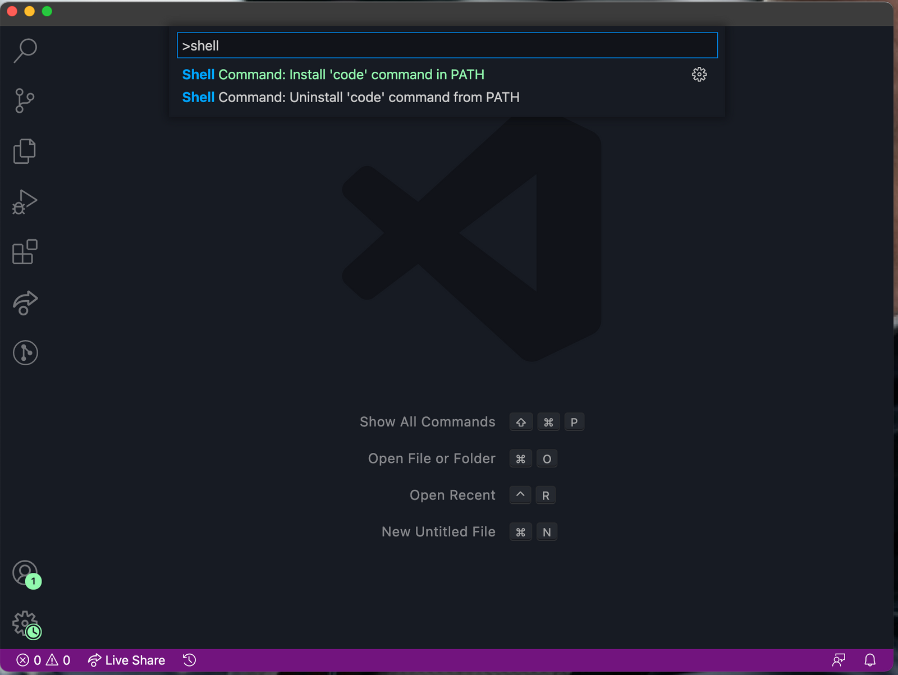

# Terminal (Mac) or Miniconda Powershell Prompt (Windows)
#> conda info # 콘다 정보
#> conda update conda # 콘다 업데이트환경설정
Mixed
1. Python과 Conda Package Manager
Conda Cheatsheet: 기본적인 conda 명령어 요약
Miniconda 설치
Anaconda보다는 기본 패키지들이 미리 설치되지 않는 miniconda를 추천: miniconda install page
- Windows 경우: 설치시 물어보는 “add Miniconda to your PATH variable” 옵션을 켜고 설치할 것
Shell 사용에 대해서는 아래 3. Command Line Tool 참고
패키지 repository(channel) 선택
다음을 통해 .condarc 환경파일에 configuration 추가
#> conda config --add channels conda-forge
#> conda config --set channel_priority strict # 채널 순으로 검색, 버전 순이 아니고# 개별적으로 채널을 선택해서 install하려면
#> conda install scipy --channel conda-forge
# pakcage가 있는 채널들
#> conda search scipyconda base에 있는 Python을 update하려면, 가령 3.10으로 업데이트하려면
#> conda install python=3.10 # python updateConda Environment
환경 생성: miniconda에서 자체 제공하는 가상환경으로 수업에서는 다른 가상환경 툴인 pyenv나 venv 사용하지 않음
#$ conda create --name myenv
# 특정 버전의 파이썬 설치시
#> conda create --name myenv python=3.9환경 확인
#$ conda env list
#> conda environments:
#> base */.../miniconda3
#> /.../miniconda3/envs/myenv환경 제거
#> conda env remove --name myenv환경 activate/deactivate
#> conda activate myenv
#> conda deactivate # activated 환경 내에서특정 환경 안의 파이썬 버전 확인
#(myenv) python --version
Jupyter notebook을 쓰는 경우
새로 만든 가상환경을 등록해줘야 함.
#> ipython kernel install --user --name=myenv가상환경을 삭제해도 등록시킨 kernel 이름은 삭제되지 않으니 직접 삭제.
등록된 커널 리스트를 확인
#> jupyter kernelspec list커널 삭제
#> jupyter kernelspec remove myenv(activated) 환경 내에서 패키지 설치 및 제거
# 특정 환경을 activate한 후
#> conda install <package name1> <package name2> ...
#> conda install --channel conda-forge <package name> # 특정 conda-forge 채널을 통한 설치
# 제거
#> conda remove <package name1> <package name2> ...
# update
#> conda update <package name1> <package name2> ...
#> conda update --all # all packages
# 패키지 리스트
#> conda list# 환경 밖에서 특정 환경 안에 설치하려면 환경이름 추가
#> conda install --name myenv <package name1># pip을 이용한 패키지 설치: conda repository에 없는 패키지들을 설치하는 경우. 충돌의 우려 있음
#> pip install <package name1> <package name2> ...# 환경 안에 다른 버전의 Python 설치하려면, 가령 python 3.9라면
#> conda install python=3.9# 수업에 필요한 기본 패키지 설치
#> conda install jupyter numpy pandas matplotlib seaborn
#> conda install -c plotly plotly=5.13.02. Visual Studio Code
VS Code 설치
개인마다 선호하는 text editor가 있으나 본 수업에서는 VS Code로 진행: download and install here
3. Command Line Tool
Mac의 경우: 기본 bash shell인 terminal 대신 다음 zsh을 추천
Oh-My-Zsh!: 링크
이 경우 miniconda 설치시 bash의 추가된 conda setup을 zsh로 가져와야 함: minconda를 zsh 설치 후에 설치하는 경우는 miniconda가 추가시키니 신경쓸 필요 없음
home directory에 있는
.bash_profile을 열면 # >>> conda initialize >>> 로 시작해서 # <<< conda initialize <<< 부분까지를 복사한 후.zshrc파일을 열어 맨 뒤에 붙여넣음위 파일을 VS Code에서 쉽게 열어보려면 아래 그림처럼 VS Code에서
Sehll Command: Install 'Code' command in PATH실행하고 나면shell 환경에서
code .zshrc를 실행하면 VS Code에서 편집할 수 있음

Windows의 경우: Windows Terminal 추천
설치 링크는 구글링…
명령프롬프트(
CMD) vs.PowershellPowershell에서 conda를 사용하기 위해서는 몇 가지 설정 필요: 블로그 링크
4. VS Code 활용
Extensions
- Python
- Python Extension Pack 중
- IntelliCode
- Python Environment Manager
- Docs View
Preferences
- Themes
- Font, font size (notebook, results)
Shortcuts
Show Command Palette: ctrl(cmd) + shift + p, 또는 F1
Cell 안과 밖
- undo/redo : ctrl(cmd) + z / ctrl(cmd) + shift + z
- alt(option) + arrow up/down : move
- alt(option) + shift + arrow up/down : copy
실행: ctrl/shift/alt(option) + enter
Basic editing 참고
그 외
- interactive mode
- export
- docs view
- variables viewer, data viewer
- formatter
- snippets